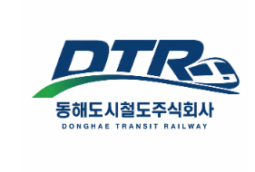

<<!doctype html><html lang="ko"><head><meta charset="utf-8"><meta name="viewport" content="width=device-width, initial-scale=1, viewport-fit=cover"><title>동해도시철도주식회사</title>
<style>
:root{--bg:#f3f5f8;--card:#fff;--tx:#1b2430;--mu:#667085;--pr:#1e4fa3;--ac:#2e9e5b;--bd:#dde3ea;box-sizing:border-box;padding-top:env(safe-area-inset-top,0px);padding-bottom:env(safe-area-inset-bottom,0px)}
@media(prefers-color-scheme:dark){:root:not([data-theme=light]){--bg:#10161e;--card:#1a222d;--tx:#e8edf3;--mu:#9aa6b5;--pr:#5b8fe0;--bd:#2c3846}}
:root[data-theme=dark]{--bg:#10161e;--card:#1a222d;--tx:#e8edf3;--mu:#9aa6b5;--pr:#5b8fe0;--bd:#2c3846}
html{scroll-padding-top:env(safe-area-inset-top,0px)}
*{box-sizing:border-box}body{margin:0;background:var(--bg);color:var(--tx);font:15px/1.6 "Noto Sans KR",system-ui,sans-serif}
a{color:inherit;text-decoration:none;cursor:pointer}
header{background:var(--card);border-bottom:1px solid var(--bd);position:sticky;top:env(safe-area-inset-top,0px);z-index:9}
.hd{max-width:1100px;margin:auto;display:flex;align-items:center;gap:8px;padding:6px 16px}
.hd img{height:48px}
nav{display:flex;flex:1;justify-content:flex-end;flex-wrap:wrap}
nav>div{position:relative}nav>div>a{display:block;padding:14px 12px;font-weight:700}
nav>div:hover>a{background:var(--pr);color:#fff}
.dd{display:none;position:absolute;right:0;top:100%;background:var(--card);border:1px solid var(--bd);box-shadow:0 8px 20px #0003;padding:8px;min-width:200px;max-height:70vh;overflow:auto}
nav>div:hover .dd{display:block}
.dd b{display:block;background:var(--bg);padding:4px 8px;margin-top:6px;font-size:13px}
.dd a{display:block;padding:3px 8px;color:var(--mu);font-size:13px}.dd a:hover{color:var(--pr)}
main{max-width:1100px;margin:auto;padding:16px}
.card{background:var(--card);border:1px solid var(--bd);border-radius:10px;padding:16px;margin-bottom:16px}
.g{display:grid;gap:16px;grid-template-columns:repeat(auto-fit,minmax(280px,1fr))}
.ban{position:relative;height:220px;border-radius:10px;overflow:hidden;background:linear-gradient(120deg,var(--pr),var(--ac));color:#fff;display:flex;align-items:center;justify-content:center;text-align:center;margin-bottom:16px}
.ban img{width:100%;height:100%;object-fit:cover}.ban h2{margin:0}
.ban button{position:absolute;top:50%;background:#0006;color:#fff;border:0;font-size:22px;padding:6px 12px;cursor:pointer}
.ib{display:grid;grid-template-columns:1fr 1fr;gap:8px;margin-top:12px}
.ib a,.ql a{border:1px solid var(--bd);border-radius:8px;padding:12px;text-align:center}.ql a{display:block;text-align:left;margin-bottom:8px}
.ib a:hover,.ql a:hover{border-color:var(--pr);color:var(--pr)}
input,select,textarea{width:100%;padding:9px;border:1px solid var(--bd);border-radius:6px;background:var(--bg);color:var(--tx);font:inherit;margin:4px 0 10px}
.btn{background:var(--pr);color:#fff;border:0;border-radius:6px;padding:10px 18px;font:inherit;font-weight:700;cursor:pointer}
.btn.s{background:var(--bg);color:var(--tx);border:1px solid var(--bd)}
label.r{display:block;padding:3px 0}label.r input{width:auto;margin:0 8px 0 0}
.chips{display:flex;flex-wrap:wrap;gap:6px 0;align-items:center;margin:8px 0 18px}
.chip{border:2px solid;border-radius:20px;padding:2px 10px;font-size:13px;background:var(--card)}.bar{width:14px;height:4px}
.tag{display:inline-block;padding:1px 8px;border-radius:10px;font-size:12px;color:#fff;background:var(--mu)}.tag.ok{background:var(--ac)}
table{width:100%;border-collapse:collapse}td,th{padding:8px;border-bottom:1px solid var(--bd);text-align:left;font-size:14px}
footer{background:#3b4452;color:#cfd6df;padding:20px 16px;font-size:13px}footer div{max-width:1100px;margin:auto}footer a{margin-right:14px;color:#fff}
.err{color:#d92d20}.mu{color:var(--mu)}.wrap{overflow-x:auto}
</style></head><body>
<header><div class="hd"><a href="#/"></a><nav id="nav"></nav></div></header>
<main id="m"></main>
<footer><div><a href="#/p/개인정보처리방침">개인정보처리방침</a><a href="#/p/여객운송약관">여객운송약관</a><a href="#/p/찾아오시는 길">찾아오시는 길</a><a href="#/admin">관리자</a><p>동해도시철도주식회사 DONGHAE TRANSIT RAILWAY · Copyright DTR. All rights reserved.</p></div></footer>
<script>
const $=s=>document.querySelector(s),esc=s=>String(s??'').replace(/[&<>"']/g,c=>({'&':'&amp;','<':'&lt;','>':'&gt;','"':'&quot;',"'":'&#39;'}[c]));
const MENU={'이용정보':{'사이버스테이션':['사이버스테이션'],'실시간열차운행정보':['실시간열차운행정보','열차서행정보(선로공사)'],'간편지연증명서':['간편지연증명서'],'운임제도':['운임안내','승차권안내','단체권운임안내','여객운송약관'],'이용고객 편의시설':['배려시설 현황','승강설비 가동현황','휠체어 이용 승·하차 안내','무인편의기기','문화공간','환승주차장','자전거 보관함','수유실','동해역 환승센터'],'역시설물 임시폐쇄 공사현황':['역시설물 임시폐쇄 공사현황'],'유실물센터':['이용안내','유실물센터']},
'안전환경':{'안전':['안전경영','사고·재난 대응'],'환경':['환경경영']},
'시민 참여':{'민원':['민원접수','민원조회'],'소통':['고객의 소리','자주묻는 질문']},
'알림마당':{'알림':['공지사항','보도자료','사규 제·개정 및 폐기 예고']},
'정보공개':{'정보공개':['사업보고서','관련 법령 및 사규']},'ESG경영':{'ESG':['ESG경영']},
'공사 소개':{'회사':['회사소개','연혁','CI 소개','찾아오시는 길']}};
const LINES=[{n:'본선',c:'#1e4fa3',s:'망상,대진,목호,발한,부곡,동호시장,천곡시청,동해터미널,평릉,동해역,동해송정,효가,북평,북평산단'.split(',')},{n:'1지선',c:'#2e9e5b',s:'동해역,천곡남부,한섬,감추,해안'.split(',')},{n:'2지선',c:'#e08a1e',s:'북평,북삼,이도,단봉,삼화'.split(',')}];
const TYPES='근무시간·근무편성,회식·사내행사,채용·입사·퇴사,급여·수당·복리후생,사내규정·공지사항,시설·근무환경,상사·동료 간 갈등,연차·휴가·휴무,업무분장·인사발령,열차 운행·운행 서비스,역 시설·승객 편의,안전관리·사고 관련,고객 응대·서비스 불편,사내 전산·업무 시스템,기타 건의사항,단순 문의·궁금증'.split(',');
const WAYS=['다른 임직원들의 의견도 확인하고 싶음','유사한 사례가 있는지 확인하고 싶음','사내 검토 및 개선 건의가 이루어지길 희망함','담당 부서에서 내용을 확인해 주길 희망함','공식적인 기록으로 남기고 싶음','관련 규정 및 처리 기준을 안내받고 싶음','별도의 조치 없이 의견 전달만 희망함','외부 이용객 관련 불편사항의 확인 및 개선을 희망함','기타'];
let db=null,usr=null,admin=null,banners=[],bi=0;
const API='https://script.google.com/macros/s/AKfycbx8167fJwMGVsCW22loo7hkjiTOF3gr4Hk0PhZVTzTASWTRdklB-X-lD9raI4tw_sgnQA/exec';let AUTH=null;
async function rpc(o){const r=await fetch(API,{method:'POST',headers:{'Content-Type':'text/plain'},body:JSON.stringify({auth:AUTH,...o})});const j=await r.json();if(j.error)throw new Error(j.error);return j.data}
const snap=(id,d)=>({id,exists:!!d,data:()=>d});
const mkq=(col,o={})=>({orderBy:(f,d)=>mkq(col,{...o,ob:f,d}),limit:n=>mkq(col,{...o,n}),get:async()=>{let l=await rpc({op:'list',col});if(o.ob)l.sort((a,b)=>(a[o.ob]-b[o.ob])*(o.d=='desc'?-1:1));if(o.n)l=l.slice(0,o.n);return{docs:l.map(x=>snap(x.id,x))}},add:d=>rpc({op:'set',col,id:'n'+Date.now(),data:d})});
db={doc:p=>{const[col,id]=p.split('/');return{get:async()=>snap(id,await rpc({op:'get',col,id})),set:data=>rpc({op:'set',col,id,data}),update:data=>rpc({op:'update',col,id,data}),delete:()=>rpc({op:'delete',col,id})}},collection:c=>mkq(c)};usr={canEdit:async()=>true};
(async()=>{try{const b=await db.doc('site/banners').get();banners=b.exists&&b.data().ids?String(b.data().ids).split(','):[]}catch(e){}route()})();
$('#nav').innerHTML=Object.entries(MENU).map(([k,v])=>`<div><a href="#/p/${k}">${k}</a><div class="dd">${Object.entries(v).map(([h,l])=>`<b>${h}</b>${l.map(x=>`<a href="${x=='민원접수'?'#/complaint':x=='민원조회'?'#/lookup':'#/p/'+x}">${x}</a>`).join('')}`).join('')}</div></div>`).join('');
const graph={};LINES.forEach(l=>l.s.forEach((s,i)=>{graph[s]??=new Set();if(i)graph[s].add(l.s[i-1]),(graph[l.s[i-1]]??=new Set()).add(s)}));
const ALL=Object.keys(graph);
function bfs(a,b){const q=[[a]],seen=new Set([a]);while(q.length){const p=q.shift(),c=p[p.length-1];if(c==b)return p;for(const n of graph[c]||[])if(!seen.has(n)){seen.add(n);q.push([...p,n])}}}
function home(){const q=['간편지연증명서','실시간열차운행정보','유실물 찾기','운임안내','교통약자 배려시설','이용고객 편의시설','승강설비 가동현황'];
 $('#m').innerHTML=`<div class="ban" id="ban"></div><div class="g"><div class="card"><b>경로찾기</b><datalist id="st">${ALL.map(s=>`<option value="${s}">`).join('')}</datalist><input id="a" list="st" placeholder="출발역"><input id="b" list="st" placeholder="도착역"><button class="btn" onclick="find()">경로찾기</button><div id="rs"></div><div class="ib"><a href="#/map">노선도</a><a href="#/p/열차시각표">열차시각표</a><a href="#/p/주변지역안내">주변지역안내</a><a href="#/p/역이용안내">역이용안내</a></div></div><div class="card ql">${q.map(x=>`<a href="#/p/${x}">${x}</a>`).join('')}</div><div class="card"><b>공지사항</b><div id="rn" class="mu" style="margin-top:8px">불러오는 중…</div></div><div class="card"><b>민원·소통</b><div class="ib"><a href="#/complaint">민원접수</a><a href="#/lookup">민원조회</a><a href="#/p/고객의 소리">고객의 소리</a><a href="#/p/자주묻는 질문">자주묻는 질문</a></div></div></div>`;drawBan();recent()}
function drawBan(){const e=$('#ban');if(!e)return;if(!banners.length){e.innerHTML='<h2>안전한 도시철도, 편리한 교통 서비스<br><small>동해도시철도가 동해시 교통의 미래를 만들어 갑니다</small></h2>';return}
 e.innerHTML=`${banners.length>1?'<button style="left:0" onclick="bi--;if(bi<0)bi=banners.length-1;drawBan()">‹</button><button style="right:0" onclick="bi++;drawBan()">›</button>':''}`}
setInterval(()=>{if(banners.length>1&&$('#ban')){bi++;drawBan()}},6000);
function find(){const a=$('#a').value,b=$('#b').value,p=ALL.includes(a)&&ALL.includes(b)&&bfs(a,b);$('#rs').innerHTML=p?`<p><b>${p.length-1}개 역 · 약 ${(p.length-1)*2+2}분 · 운임 ${fareOf(p.length-1).toLocaleString()}원</b><br class="mu">${p.join(' → ')}</p>`:'<p class="err">역 이름을 목록에서 선택해 주세요.</p>'}
function map(){$('#m').innerHTML='<div class="card"><h2>노선도</h2>'+LINES.map(l=>`<b style="color:${l.c}">${l.n}</b><div class="chips">${l.s.map((s,i)=>(i?`<span class="bar" style="background:${l.c}"></span>`:'')+`<span class="chip" style="border-color:${l.c}">${s}</span>`).join('')}</div>`).join('')+'<p class="mu">환승: 동해역(본선↔1지선), 북평(본선↔2지선)</p></div>'}
function complaint(){$('#m').innerHTML=`<div class="card"><h2>민원 접수</h2>${db?'':'<p class="err">현재 접수 기능을 사용할 수 없습니다. 로그인 후 다시 시도해 주세요.</p>'}
<label>민원 유형 *<select id="t"><option value="">선택</option>${TYPES.map(x=>`<option>${x}</option>`).join('')}</select></label>
<label>성함 (선택)<input id="nm"></label><label>연락처 / 이메일 (선택, 답변은 접수번호로 조회)<input id="ct"></label>
<label>제목 *<input id="ti"></label>
<label>민원 내용 * <span class="mu">※사진 및 영상 증거물은 DM으로 보내주십시오.</span><textarea id="co" rows="6"></textarea></label>
<p><b>희망하는 처리 방식 *</b><br class="mu">본 건에 대해 가장 원하는 처리 방향을 선택하여 주십시오.</p>${WAYS.map(w=>`<label class="r"><input type="radio" name="w" value="${w}">${w}</label>`).join('')}
<p><b>안내 *</b><br>본 민원을 동해도시철도 관련 업무에 활용하는 것에 동의합니다.</p>
<label class="r"><input type="radio" name="ag" value="동의합니다">동의합니다</label><label class="r"><input type="radio" name="ag" value="아니오 단순 접수만 희망합니다">아니오 단순 접수만 희망합니다</label>
<p id="msg" class="err"></p><button class="btn" onclick="submitC()">접수하기</button></div>`}
async function submitC(){const v=id=>$('#'+id).value.trim(),r=n=>(document.querySelector(`input[name=${n}]:checked`)||{}).value;
 const d={type:v('t'),name:v('nm'),contact:v('ct'),title:v('ti'),content:v('co'),way:r('w'),agree:r('ag')};
 if(!d.type||!d.title||!d.content||!d.way||!d.agree){$('#msg').textContent='* 표시 항목을 모두 입력해 주세요.';return}
 if(!db){$('#msg').textContent='접수 기능을 사용할 수 없습니다.';return}
 const n=new Date(),code='DTR-'+String(n.getFullYear()).slice(2)+String(n.getMonth()+1).padStart(2,'0')+String(n.getDate()).padStart(2,'0')+'-'+Math.random().toString(36).slice(2,6).toUpperCase();
 try{await db.doc('complaints/'+code).set({...d,code,status:'접수',answer:'',createdAt:Date.now()});$('#m').innerHTML=`<div class="card"><h2>접수가 완료되었습니다</h2><p>접수번호</p><h1 style="color:var(--pr)">${code}</h1><p>이 번호로 <a href="#/lookup"><u>민원조회</u></a>에서 처리 상태와 답변을 확인할 수 있습니다. 꼭 보관해 주세요.</p></div>`}catch(e){$('#msg').textContent='접수에 실패했습니다. 잠시 후 다시 시도해 주세요.'}}
function lookup(){$('#m').innerHTML=`<div class="card"><h2>민원 조회</h2><input id="lc" placeholder="접수번호 (예: DTR-261011-AB12)"><button class="btn" onclick="doLookup()">조회</button><div id="lr"></div></div>`}
function view(d){return `<table><tr><th>접수번호</th><td>${esc(d.code)}</td></tr><tr><th>상태</th><td><span class="tag ${d.answer?'ok':''}">${d.answer?'답변완료':'답변 대기'}</span></td></tr><tr><th>유형</th><td>${esc(d.type)}</td></tr><tr><th>제목</th><td>${esc(d.title)}</td></tr><tr><th>내용</th><td style="white-space:pre-wrap">${esc(d.content)}</td></tr><tr><th>희망 처리</th><td>${esc(d.way)}</td></tr><tr><th>답변</th><td style="white-space:pre-wrap">${d.answer?esc(d.answer):'<span class="mu">아직 답변이 등록되지 않았습니다.</span>'}</td></tr></table>`}
async function doLookup(){const c=$('#lc').value.trim().toUpperCase();if(!db)return $('#lr').innerHTML='<p class="err">조회 기능을 사용할 수 없습니다.</p>';
 try{const s=await db.doc('complaints/'+c).get();$('#lr').innerHTML=s.exists?view(s.data()):'<p class="err">해당 접수번호를 찾을 수 없습니다.</p>'}catch(e){$('#lr').innerHTML='<p class="err">조회에 실패했습니다.</p>'}}
async function sha(s){return [...new Uint8Array(await crypto.subtle.digest('SHA-256',new TextEncoder().encode(s)))].map(b=>b.toString(16).padStart(2,'0')).join('')}
function adminLogin(){$('#m').innerHTML=`<div class="card" style="max-width:380px"><h2>관리자 로그인</h2><input id="ai" placeholder="아이디"><input id="ap" type="password" placeholder="비밀번호"><p id="msg" class="err"></p><button class="btn" onclick="login()">로그인</button> <button class="btn s" onclick="regFirst()">최초 관리자 등록</button><p class="mu">최초 등록에는 Code.gs의 설정 키가 필요합니다.</p></div>`}
async function login(){const i=$('#ai').value.trim();try{const h=await sha($('#ap').value);await rpc({op:'login',auth:{u:i,h}});AUTH={u:i,h};admin=i;panel()}catch(e){$('#msg').textContent='아이디 또는 비밀번호가 올바르지 않습니다.'}}
async function regFirst(){const i=$('#ai').value.trim(),p=$('#ap').value;if(!i||p.length<6)return $('#msg').textContent='아이디와 6자 이상 비밀번호를 입력하세요.';const k=prompt('Code.gs의 SETUP_KEY를 입력하세요');try{const h=await sha(p);await rpc({op:'bootstrap',key:k,id:i,h});AUTH={u:i,h};admin=i;panel()}catch(e){$('#msg').textContent='등록 실패: 키가 틀렸거나 이미 관리자가 있습니다.'}}
async function panel(){let list=[];try{list=(await db.collection('complaints').orderBy('createdAt','desc').get()).docs.map(x=>x.data())}catch(e){}
 const canEd=usr&&await usr.canEdit();
 $('#m').innerHTML=`<div class="card"><h2>관리자 · ${esc(admin)} <button class="btn s" onclick="admin=null;adminLogin()">로그아웃</button></h2><p>총 ${list.length}건 · 답변 대기 ${list.filter(x=>!x.answer).length}건 <button class="btn s" onclick="csv()">CSV 내보내기(구글 시트용)</button></p><div class="wrap"><table><tr><th>번호</th><th>유형</th><th>제목</th><th>상태</th></tr>${list.map(x=>`<tr><td><a onclick="open1('${x.code}')"><u>${x.code}</u></a></td><td>${esc(x.type)}</td><td>${esc(x.title)}</td><td><span class="tag ${x.answer?'ok':''}">${x.answer?'답변완료':'대기'}</span></td></tr>`).join('')}</table></div><div id="dt"></div></div>
 <div class="card"><b>공지사항·보도자료 작성</b><select id="nc">${BOARDS.map(b=>`<option>${b}</option>`).join('')}</select><input id="nt" placeholder="제목"><textarea id="nb" rows="6" placeholder="내용"></textarea><button class="btn" onclick="postN()">등록</button> <span id="nm2"></span></div>
 <div class="card"><b>관리자 추가</b><input id="ni" placeholder="새 아이디"><input id="np" type="password" placeholder="비밀번호 6자 이상"><button class="btn" onclick="addAdm()">추가</button> <span id="am"></span></div>
 ${canEd?'<div class="card"><b>메인 배너 관리</b><input id="bu" placeholder="이미지 경로 (예: banners/b1.jpg)"><button class="btn" onclick="addBan()">배너 추가</button><div id="bl">'+banners.map((x,i)=>`<p> <a onclick="delBan(${i})" class="err">삭제</a></p>`).join('')+'</div></div>':''}`;window._l=list}
async function open1(c){const x=window._l.find(y=>y.code==c);$('#dt').innerHTML=view(x)+`<textarea id="an" rows="5" placeholder="답변 입력">${esc(x.answer)}</textarea><button class="btn" onclick="ans('${c}')">답변 저장</button>`}
async function ans(c){await db.doc('complaints/'+c).update({answer:$('#an').value,status:'답변완료',answeredBy:admin,answeredAt:Date.now()});panel()}
async function addAdm(){const i=$('#ni').value.trim(),p=$('#np').value;if(!i||p.length<6)return $('#am').textContent='입력 확인';await db.doc('admins/'+i).set({h:await sha(p)});$('#am').textContent='추가됨'}
async function addBan(){const u=$('#bu').value.trim();if(!u)return;banners=[...banners,u];await db.doc('site/banners').set({ids:banners.join(',')});panel()}
async function delBan(i){banners.splice(i,1);await db.doc('site/banners').set({ids:banners.join(',')});panel()}
async function csv(){const q=s=>'"'+String(s??'').replace(/"/g,'""')+'"',h=['code','createdAt','type','name','contact','title','content','way','agree','answer'];
 const rows=[h.join(',')].concat(window._l.map(x=>h.map(k=>q(k=='createdAt'?new Date(x[k]).toLocaleString('ko-KR'):x[k])).join(',')));
 const a=document.createElement('a');a.href=URL.createObjectURL(new Blob(['\ufeff'+rows.join('\n')],{type:'text/csv'}));a.download='민원목록.csv';a.click()}
async function board(cat){window._bc=cat;let l=[];try{l=(await db.collection('notices').orderBy('createdAt','desc').get()).docs.map(x=>({id:x.id,...x.data()})).filter(x=>x.cat==cat)}catch(e){}
 window._n=l;$('#m').innerHTML=`<div class="card"><h2>${esc(cat)}</h2>${admin?`<div class="card"><b>글쓰기 (관리자)</b><select id="nc"><option>${esc(cat)}</option></select><input id="nt" placeholder="제목"><textarea id="nb" rows="5" placeholder="내용"></textarea><button class="btn" onclick="postN().then(()=>board(window._bc))">등록</button> <span id="nm2"></span></div>`:''}${l.length?`<table>${l.map(x=>`<tr><td><a onclick="nview('${x.id}')"><u>${esc(x.title)}</u></a></td><td class="mu">${new Date(x.createdAt).toLocaleDateString('ko-KR')}</td></tr>`).join('')}</table>`:'<p class="mu">등록된 글이 없습니다.</p>'}<div id="nd"></div></div>`}
function nview(id){const x=window._n.find(y=>y.id==id);$('#nd').innerHTML=`<hr><h3>${esc(x.title)}</h3><p style="white-space:pre-wrap">${esc(x.body)}</p>${admin?`<button class="btn s" onclick="ndel('${id}','${x.cat}')">삭제</button>`:''}`}
async function ndel(id,c){if(!confirm('삭제할까요?'))return;await db.doc('notices/'+id).delete();board(c)}
async function postN(){const t=$('#nt').value.trim(),b=$('#nb').value.trim();if(!t||!b)return $('#nm2').textContent='제목과 내용을 입력하세요.';try{await db.collection('notices').add({cat:$('#nc').value,title:t,body:b,author:admin,createdAt:Date.now()});$('#nm2').textContent='등록되었습니다.';$('#nt').value=$('#nb').value=''}catch(e){$('#nm2').textContent='등록 실패'}}
async function recent(){const e=$('#rn');if(!e||!db)return;try{const l=(await db.collection('notices').orderBy('createdAt','desc').limit(30).get()).docs.map(x=>x.data()).filter(x=>x.cat=='공지사항').slice(0,5);e.innerHTML=l.length?l.map(x=>`<a href="#/p/공지사항" style="display:block">▸ ${esc(x.title)}</a>`).join(''):'등록된 공지가 없습니다.'}catch(x){}}
const BOARDS=['공지사항','보도자료','열차서행정보(선로공사)','역시설물 임시폐쇄 공사현황','사규 제·개정 및 폐기 예고'];
const ALIAS={'유실물 찾기':'유실물센터','교통약자 배려시설':'배려시설 현황'};
const li=a=>'<ul>'+a.map(x=>'<li>'+x+'</li>').join('')+'</ul>',lk=(h,t)=>`<a href="#/p/${h}"><u>${t}</u></a>`;
const fm=m=>String(Math.floor(m/60)).padStart(2,'0')+':'+String(m%60).padStart(2,'0');
const hw=m=>(m>=360&&m<540)||(m>=1020&&m<1200)?12:20;
const fareOf=n=>n<=6?1250:n<=12?1350:1450;
function deps(l,i,up){const n=l.s.length,off=(up?i:n-1-i)*2,r=[];for(let m=l.n=='본선'?330:350;m<=1400;m+=hw(m))r.push(m+off);return r}
function dirs(st){const r=[];LINES.forEach(l=>{const i=l.s.indexOf(st);if(i<0)return;const n=l.s.length;if(i<n-1)r.push({l,label:`${l.n} ${l.s[n-1]}행`,t:deps(l,i,true)});if(i>0)r.push({l,label:`${l.n} ${l.s[0]}행`,t:deps(l,i,false)})});return r}
const stSel=(id,fn)=>`<select id="${id}" onchange="${fn}()">${ALL.map(s=>`<option>${s}</option>`).join('')}</select>`;
const shell=(t,h)=>{$('#m').innerHTML=`<div class="card"><h2>${t}</h2>${h}</div>`};
function tt(){shell('열차시각표','<p class="mu">평일·주말 동일 운행 · 출퇴근 시간대(06~09시, 17~20시) 12분, 그 외 20분 간격</p>'+stSel('ts','ttr')+'<div id="tr"></div>');ttr()}
function ttr(){$('#tr').innerHTML=dirs($('#ts').value).map(d=>{const by={};d.t.forEach(m=>{(by[Math.floor(m/60)]??=[]).push(String(m%60).padStart(2,'0'))});return`<h3 style="color:${d.l.c}">${d.label}</h3><div class="wrap"><table>${Object.keys(by).map(h=>`<tr><th>${h}시</th><td>${by[h].join(' ')}</td></tr>`).join('')}</table></div>`}).join('')}
function rt(){shell('실시간열차운행정보','<p class="mu">시각표 기준 다음 열차 안내입니다. 서행·지연 소식은 '+lk('열차서행정보(선로공사)','열차서행정보')+'를 확인하세요.</p>'+stSel('rs2','rtr')+' <button class="btn s" onclick="rtr()">새로고침</button><div id="rr"></div>');rtr()}
function rtr(){const d=new Date(),now=d.getHours()*60+d.getMinutes();$('#rr').innerHTML=`<p class="mu">현재 ${fm(now)}</p>`+dirs($('#rs2').value).map(x=>{const n=x.t.filter(m=>m>=now).slice(0,3);return`<p><b style="color:${x.l.c}">${x.label}</b> : ${n.length?n.map(m=>`${fm(m)} (${m-now}분 후)`).join(' · '):'금일 운행 종료'}</p>`}).join('')}
const TRN={'동해역':'KTX·일반열차·버스 환승, 본선↔1지선 환승','북평':'본선↔2지선 환승','동해터미널':'동해종합버스터미널 연계'};
function su(){shell('역이용안내',stSel('ss','sur')+'<div id="sr"></div>');sur()}
function sur(){const s=$('#ss').value,ls=LINES.filter(l=>l.s.includes(s)),all=dirs(s).flatMap(x=>x.t);$('#sr').innerHTML=`<table><tr><th>소속 노선</th><td>${ls.map(l=>l.n).join(', ')}</td></tr><tr><th>첫차 / 막차</th><td>${fm(Math.min(...all))} / ${fm(Math.max(...all))}</td></tr><tr><th>인접역</th><td>${[...graph[s]].join(', ')}</td></tr><tr><th>환승·연계</th><td>${TRN[s]||'-'}</td></tr><tr><th>편의시설</th><td>엘리베이터, 무인승차권발매기, 장애인 화장실</td></tr></table>`}
const NEAR={'망상':'망상해수욕장','목호':'묵호항, 논골담길','천곡시청':'동해시청, 천곡황금박쥐동굴','동해터미널':'동해종합버스터미널','동해역':'동해역(KTX·일반열차), 버스 환승','북평':'북평민속시장','북평산단':'북평산업단지','삼화':'삼화사, 무릉계곡'};
function near(){shell('주변지역안내',stSel('ns','nr')+'<div id="nrr"></div>');nr()}
function nr(){const s=$('#ns').value;$('#nrr').innerHTML=`<p><b>${s}역 주변</b><br>${NEAR[s]||'역 주변 주거·상업 지역'}</p>`}
function fare(){shell('운임안내','<table><tr><th>이용 구간</th><th>일반 운임(교통카드)</th></tr><tr><td>1~6개 역</td><td>1,250원</td></tr><tr><td>7~12개 역</td><td>1,350원</td></tr><tr><td>13개 역 이상</td><td>1,450원</td></tr></table><p class="mu">어린이·청소년·우대 대상 할인은 관련 법령과 여객운송약관에 따릅니다.</p><h3>운임 계산</h3><datalist id="fs">'+ALL.map(s=>`<option value="${s}">`).join('')+'</datalist><input id="fa" list="fs" placeholder="출발역"><input id="fb" list="fs" placeholder="도착역"><button class="btn" onclick="fcalc()">계산</button><p id="fr"></p>')}
function fcalc(){const p=bfs($('#fa').value,$('#fb').value);$('#fr').innerHTML=p?`<b>${p.length-1}개 역 · ${fareOf(p.length-1).toLocaleString()}원</b>`:'<span class="err">역 이름을 목록에서 선택하세요.</span>'}
const DYN={'열차시각표':tt,'실시간열차운행정보':rt,'역이용안내':su,'주변지역안내':near,'운임안내':fare};
const C={
'사이버스테이션':()=>'<p>역 이용에 필요한 정보를 한 곳에서 확인하세요.</p>'+li(['<a href="#/map"><u>노선도</u></a>',lk('열차시각표','열차시각표'),lk('역이용안내','역이용안내'),lk('운임안내','운임안내'),lk('실시간열차운행정보','실시간 열차운행정보'),'<a href="#/complaint"><u>민원접수</u></a>']),
'간편지연증명서':()=>'<p>열차가 지연된 경우 지연증명서를 발급받을 수 있습니다.</p>'+li(['대상: 열차가 20분 이상 지연된 경우','신청: <a href="#/complaint"><u>민원접수</u></a>에서 유형을 "열차 운행·운행 서비스"로 선택하고 이용 일시와 승·하차역을 적어 주세요.','확인: 접수번호로 <a href="#/lookup"><u>민원조회</u></a>에서 지연 확인 결과를 볼 수 있습니다.']),
'승차권안내':()=>li(['1회용 승차권: 역 무인승차권발매기에서 구매합니다.','교통카드: 충전식 교통카드로 개찰구를 통과할 수 있습니다.','환불: 구매한 역에서 당일에 한해 환불할 수 있습니다.','분실·훼손 시 역무원에게 문의해 주세요.']),
'단체권운임안내':()=>li(['대상: 20인 이상 단체 이용객','할인: 일반 운임의 10%','신청: 이용 3일 전까지 <a href="#/complaint"><u>민원접수</u></a>(단순 문의·궁금증)로 일정과 인원을 알려 주세요.']),
'여객운송약관':()=>'<ol><li>제1조(목적) 이 약관은 동해도시철도주식회사가 운영하는 열차의 여객 운송에 관한 기본 사항을 정합니다.</li><li>제2조(운임) 승객은 정해진 운임을 내고 열차를 이용합니다.</li><li>제3조(승차 거절) 안전을 해치거나 다른 승객에게 피해를 줄 우려가 있으면 승차를 거절할 수 있습니다.</li><li>제4조(운행 지연) 열차가 지연되면 승객의 요청에 따라 지연증명서를 발급합니다.</li><li>제5조(휴대품) 승객은 안전한 범위의 휴대품만 가지고 탈 수 있습니다.</li><li>제6조(유실물) 역 구내와 열차 안 유실물은 유실물센터에서 보관합니다.</li></ol><p class="mu">※ 요약본입니다. 전문은 관리자가 "이 페이지 수정"에서 입력할 수 있습니다.</p>',
'배려시설 현황':()=>li(['모든 역 엘리베이터와 휠체어 경사로 설치','점자블록·점자 안내판','장애인 화장실','교통약자 보호석·임산부 배려석','휠체어 승·하차 지원: 역무원 호출']),
'승강설비 가동현황':()=>'<p class="mu">※ 샘플 데이터입니다. 관리자가 "이 페이지 수정"에서 실제 상태로 바꿀 수 있습니다.</p><div class="wrap"><table><tr><th>역</th><th>엘리베이터</th><th>에스컬레이터</th><th>상태</th></tr>'+ALL.map(s=>`<tr><td>${s}</td><td>${TRN[s]?2:1}</td><td>${TRN[s]?2:1}</td><td>정상</td></tr>`).join('')+'</table></div>',
'휠체어 이용 승·하차 안내':()=>'<ol><li>역 출입구 엘리베이터로 승강장까지 이동합니다.</li><li>승강장 인터폰 또는 역무원 호출로 승차 지원을 요청합니다.</li><li>역무원이 안내하는 승차 위치에서 대기합니다.</li><li>하차역에도 도착 정보가 전달되어 지원을 받을 수 있습니다.</li></ol>',
'무인편의기기':()=>li(['무인승차권발매기','교통카드 충전기','무인 분실물 접수 안내기(일부 역)']),
'문화공간':()=>'<p>역사 내 게시 공간에서 지역 작가 전시와 동해시 소식을 소개합니다.</p>',
'환승주차장':()=>li(['동해역: KTX·일반열차·버스 환승객용 주차 공간 운영','북평역: 본선↔2지선 환승객용','이용 요금과 시간은 공지사항을 확인하세요.']),
'자전거 보관함':()=>'<p>자전거 보관대는 주요 역 출입구 인근에 설치되어 있으며, 무료로 이용할 수 있습니다.</p>',
'수유실':()=>'<p>동해역, 동해터미널역에서 수유실을 이용할 수 있습니다. 역무원에게 문의해 주세요.</p>',
'동해역 환승센터':()=>li(['KTX·일반열차: 동해역 연계 통로 이용','시내·시외버스: 동해역 앞 정류장','1지선(동해역↔해안): 동해역 승강장에서 환승']),
'유실물센터':()=>li(['동해역 고객안내센터에서 유실물을 보관합니다.','분실 시 <a href="#/complaint"><u>민원접수</u></a>에 물건 종류, 이용 시간, 열차·역 정보를 적어 주세요.','보관 기간이 지난 유실물은 관련 법령에 따라 처리합니다.']),
'안전경영':()=>li(['안전을 최우선 가치로 열차를 운행합니다.','정기 시설·차량 점검 및 승무원 안전교육 실시','안전 관련 건의는 <a href="#/complaint"><u>민원접수</u></a>(안전관리·사고 관련)에서 받습니다.']),
'사고·재난 대응':()=>li(['사고 발생 시 즉시 열차를 정지하고 승객 안전을 확보합니다.','열차 안 비상 인터폰과 비상 정지 장치 이용','운행 중단·지연 소식은 '+lk('열차서행정보(선로공사)','열차서행정보')+'에 안내합니다.']),
'환경경영':()=>li(['에너지 절감형 차량 도입 검토','역사 조명 LED 교체 및 폐기물 분리배출','동해의 바다와 산을 지키는 철도를 목표로 합니다.']),
'고객의 소리':()=>'<p>동해도시철도 이용 중 불편한 점이나 제안을 남겨 주세요.</p>'+li(['<a href="#/complaint"><u>민원접수</u></a> : 새 민원 접수','<a href="#/lookup"><u>민원조회</u></a> : 접수번호로 처리·답변 확인'])+'<p class="mu">사진·영상 증거물은 DM으로 보내 주세요.</p>',
'자주묻는 질문':()=>[['운임은 어떻게 계산되나요?','이용한 역 수에 따라 달라집니다. '+lk('운임안내','운임안내')+'에서 계산할 수 있습니다.'],['민원 결과는 어떻게 확인하나요?','접수 후 받은 접수번호로 <a href="#/lookup"><u>민원조회</u></a>에서 확인합니다.'],['환승은 어디에서 하나요?','동해역(본선↔1지선), 북평역(본선↔2지선)입니다.'],['첫차와 막차는 몇 시인가요?',lk('열차시각표','열차시각표')+'에서 역별로 확인하세요.'],['유실물은 어디서 찾나요?',lk('유실물센터','유실물센터')+'를 확인하세요.'],['휠체어는 어떻게 이용하나요?',lk('휠체어 이용 승·하차 안내','휠체어 이용 승·하차 안내')+'를 참고하세요.']].map(x=>`<details style="margin:8px 0"><summary><b>${x[0]}</b></summary><p>${x[1]}</p></details>`).join(''),
'사업보고서':()=>'<p>사업보고서는 매 사업연도 종료 후 이 페이지에 게시합니다. 관리자가 "이 페이지 수정"에서 내용을 등록할 수 있습니다.</p>',
'관련 법령 및 사규':()=>li(['철도사업법','철도안전법','도시철도법','개인정보 보호법','여객운송약관 ('+lk('여객운송약관','보기')+')']),
'ESG경영':()=>li(['<b>환경(E)</b> 에너지 절감, 폐기물 줄이기','<b>사회(S)</b> 교통약자 배려, 지역 상생, 임직원 안전·복지','<b>지배구조(G)</b> 투명한 정보공개, 윤리경영']),
'회사소개':()=>'<p><b>동해도시철도주식회사</b>(DONGHAE TRANSIT RAILWAY, DTR)는 강원도 동해시를 달리는 지역 철도 회사입니다.</p>'+li(['본선: 망상 ↔ 북평산단 (14개 역)','1지선: 동해역 ↔ 해안 (5개 역)','2지선: 북평 ↔ 삼화 (5개 역)','차량: 디젤 동차 553호, 디젤 입환기관차 2108호 (파랑·흰색·초록 파도 도색)']),
'연혁':()=>'<p class="mu">개통 이후 주요 연혁을 기록하는 페이지입니다. 관리자가 "이 페이지 수정"에서 날짜와 함께 입력해 주세요.</p>'+li(['본선 개통','1지선 개통','2지선 개통']),
'CI 소개':()=>'<p></p><p>파랑은 동해의 바다, 초록은 산과 녹지를 뜻하며, 달리는 열차의 속도감을 파도 모양으로 표현했습니다.</p>',
'찾아오시는 길':()=>'<p>본사: 강원특별자치도 동해시 (상세 주소는 관리자가 "이 페이지 수정"에서 입력)</p><p>대중교통: 동해역에서 하차</p>',
'개인정보처리방침':()=>li(['수집 항목: 민원 유형, 제목, 내용, 성함·연락처(선택)','수집 목적: 민원 접수, 처리, 답변','보유 기간: 민원 처리 완료 후 관련 법령에서 정한 기간','제3자 제공: 하지 않습니다.','접수 정보는 구글 시트에 저장됩니다.'])
};
function subs(t){let r=MENU[t]?Object.values(MENU[t]).flat():[];if(!r.length)for(const g of Object.values(MENU))if(g[t])r=g[t];return r}
async function page(t0){const t=ALIAS[t0]||t0;window._pt=t;if(DYN[t])return DYN[t]();const b=C[t],sub=b?[]:subs(t);
 $('#m').innerHTML=`<div class="card"><h2>${esc(t)}</h2>${b?`<div id="pb">${b()}</div>`:sub.length?sub.map(x=>`<p><a href="${x=='민원접수'?'#/complaint':x=='민원조회'?'#/lookup':'#/p/'+x}">▸ ${x}</a></p>`).join(''):'<p class="mu">이 페이지의 내용은 준비 중입니다.</p>'}${b&&admin?'<p><button class="btn s" onclick="editPg()">이 페이지 수정</button></p>':''}</div>`;
 if(b)try{const s=await db.doc('site/pg_'+t).get();if(s.exists&&s.data().txt&&window._pt==t){const e=$('#pb');e.style.whiteSpace='pre-wrap';e.textContent=s.data().txt}}catch(e){}}
function editPg(){const t=window._pt,cur=$('#pb').innerText;shell(esc(t)+' 수정','<textarea id="pe" rows="16"></textarea><button class="btn" onclick="savePg()">저장</button> <button class="btn s" onclick="resetPg()">원래대로</button> <button class="btn s" onclick="page(window._pt)">취소</button>');$('#pe').value=cur}
async function savePg(){await db.doc('site/pg_'+window._pt).set({txt:$('#pe').value});page(window._pt)}
async function resetPg(){await db.doc('site/pg_'+window._pt).delete();page(window._pt)}
function route(){const h=decodeURIComponent(location.hash||'#/');window.scrollTo(0,0);
 if(h=='#/'||h=='')home();else if(h=='#/map')map();else if(h=='#/complaint')complaint();else if(h=='#/lookup')lookup();else if(h=='#/admin')admin&&db?panel():adminLogin();else if(h.startsWith('#/p/')){const t=h.slice(4);t=='노선도'?map():t=='민원접수'?complaint():t=='민원조회'?lookup():BOARDS.includes(t)?board(t):page(t)}else home()}
addEventListener('hashchange',route);route();
</script></body></html>
